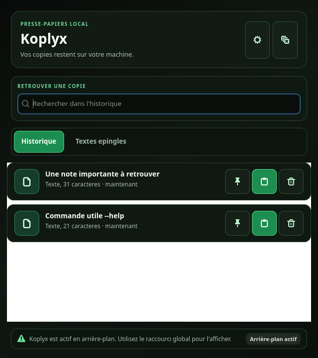

Koplyx
Koplyx
Koplyx
Un historique du presse-papiers pour Linux, local et chiffré. Retrouvez vos textes, images et fichiers copiés, recherchez une entrée et restaurez-la depuis une fenêtre compacte.
Télécharger · Notes de version · Contribuer · Signaler un bug

Distributions et installation
Snap Store
Installez Koplyx depuis sa page Snap Store ou sur une distribution équipée de Snap :
sudo snap install koplyx
Pour demander une mise à jour du canal stable :
sudo snap refresh koplyx --channel=latest/stable
Le Snap strict ne peut pas configurer /dev/uinput, donc l'assistant n'y propose pas ydotool. Pour tester ydotool, installez le paquet Debian stable depuis les GitHub Releases, puis déconnectez-vous et reconnectez-vous après l'installation du helper système.
Beta 0.4.7-beta.2
Cette beta corrige le collage vers GTK sur X11 et les entrées texte parasites lors de la copie d'un fichier. La version apparaît dans les paramètres.
sudo snap refresh koplyx --channel=latest/beta
Le paquet .deb est proposé dans la préversion GitHub. Le test E2E vérifie une cible GTK sur X11 isolé; le parcours complet du portail GNOME/Wayland reste à valider sur le bureau.
Debian et Ubuntu (.deb)
Téléchargez koplyx_<version>_all.deb dans les GitHub Releases. Depuis le dossier de téléchargement, installez le fichier de la version choisie. Exemple pour la release stable 0.4.6 :
sudo apt install ./koplyx_0.4.6_all.deb
Pour mettre à jour, téléchargez et installez le paquet de la nouvelle release.
Depuis les sources
Sur Debian ou Ubuntu, installez les dépendances puis lancez le projet :
sudo apt install python3 python3-gi gir1.2-gtk-4.0 gir1.2-gdkpixbuf-2.0 python3-cryptography python3-pil python3-dbus python3-secretstorage dbus-user-session xdotool wtype ydotool
git clone https://github.com/DemeulemeesterxMaxime/Koplyx.git
cd Koplyx
./bin/koplyx
Vous pouvez aussi extraire l'archive source d'une release. Pour ajouter un lanceur à votre session, exécutez ./packaging/install-user.sh depuis le dossier du projet. Le lanceur utilise ce dossier : conservez-le à son emplacement après l'installation.
Flatpak
Le dépôt fournit un manifeste Flatpak pour la construction locale et la préparation d'une soumission à Flathub. Les commandes et prérequis sont dans le guide de packaging et publication.
Releases
Les GitHub Releases regroupent les versions publiées et leurs fichiers :
koplyx_<version>_all.deb: paquet Debian et Ubuntu.koplyx-<version>-linux-source.tar.gz: archive source.SHA256SUMS: sommes de contrôle des deux artefacts.
Téléchargez les deux artefacts et SHA256SUMS dans le même dossier, puis vérifiez leur intégrité :
sha256sum -c SHA256SUMS
Le projet suit Semantic Versioning (MAJOR.MINOR.PATCH), avec VERSION comme source de vérité. Le changelog détaille les évolutions et correctifs.
Le workflow de release vérifie les pull requests vers main et construit les artefacts Linux et Snap. Les tags v* déclenchent la publication GitHub ; la publication Snap stable dépend des identifiants du Store configurés dans la CI. Attendez la réussite complète de la CI avant une fusion ou une publication. Consultez le guide de publication pour la procédure complète.
Utiliser Koplyx

- Recherchez parmi les textes, images et fichiers copiés.
- Épinglez les textes, images et fichiers à conserver. Le filtre global choisit si les épingles apparaissent en haut, en bas ou uniquement dans l'onglet
Épinglés. - Cliquez sur une ligne pour restaurer puis coller immédiatement l'élément dans la fenêtre précédente, sans créer une nouvelle entrée d'historique.
- Ouvrez la fenêtre avec
Ctrl+Alt+V, configurable dans les paramètres et installé automatiquement sous GNOME. - Le menu de la barre système propose
Afficher Koplyx,ParamètresetQuitter Koplyx. L'historique se consulte dans la fenêtre principale.
Koplyx peut démarrer en arrière-plan à l'ouverture de session. L'assistant essaie automatiquement les solutions de collage dans l'ordre adapté à votre session, conserve les réussites confirmées, puis vous laisse choisir la méthode à utiliser à la fin du parcours. Le portail du bureau Wayland n'est utilisé qu'après votre accord explicite et affiche une demande « Bureau à distance » limitée au clavier. wtype dépend du support du compositeur ; ydotool nécessite son daemon, l'accès à uinput et le helper système fourni par le paquet installé. Koplyx ne demande ni partage d'écran ni contrôle de souris. Le bureau peut révoquer une autorisation dans ses paramètres de confidentialité. Le mode presse-papiers restaure chaque élément en première position, tente Ctrl+V, puis vous indique clairement d'utiliser Ctrl+V manuellement si aucun outil d'injection n'est disponible. L'indicateur système nécessite un hôte AppIndicator/KStatusNotifierItem.
Au premier lancement, l'assistant de collage configure le raccourci GNOME, prépare le test actif dans le champ que vous choisissez puis essaie chaque solution l'une après l'autre. Le test est exclu de l'historique et le presse-papiers précédent est restauré lorsque le bureau le permet. L'assistant reste relançable depuis Paramètres. Les Paramètres affichent seulement l'état de la configuration : le choix d'une méthode est mémorisé uniquement après votre confirmation dans l'assistant. Aucun privilège n'est demandé sans clic de votre part.
Le test XWayland relance uniquement Koplyx avec GDK_BACKEND=x11 : il ne transforme pas toute la session Wayland. Une session Xorg n'est proposée que si un fichier /usr/share/xsessions/*.desktop est présent. Sa configuration sauvegarde /etc/gdm3/custom.conf, prend effet au prochain redémarrage et peut être annulée par le bouton « Restaurer Wayland » ou par koplyx --restore-display-session. La restauration refuse de remplacer un fichier GDM modifié depuis la sauvegarde.
L'option ydotool utilise uniquement un groupe système dédié et une règle udev pour /dev/uinput. Koplyx envoie des événements virtuels de collage et ne lit pas les périphériques clavier. Une reconnexion ou un redémarrage est nécessaire après l'autorisation. Le test est masqué dans une exécution depuis les sources tant que le helper root-owned n'est pas installé par le paquet. Snap et Flatpak ne peuvent pas modifier l'uinput de l'hôte depuis leur sandbox : l'assistant masque cette étape et propose le portail ou le mode presse-papiers.
Les contenus sont chiffrés avant leur stockage local dans SQLite et les aperçus sont déchiffrés en mémoire. La clé utilise Secret Service/libsecret si disponible, avec un fichier local en solution de repli. Consultez la politique de sécurité pour les précautions concernant les anciens historiques.
Contributions
Koplyx est un projet open source sous licence MIT. Les contributions sont bienvenues : corrections de bugs, documentation, accessibilité, packaging et tests sur différentes distributions Linux.
- Consultez les issues et ouvrez une discussion avant une modification importante.
- Lisez le guide de contribution et le code de conduite.
- Créez une branche dédiée et effectuez les vérifications locales.
- Ouvrez une pull request vers
mainavec une description du changement, les tests effectués et les limites connues sur X11, Wayland, Snap ou Flatpak.
Pour un bug, indiquez la version, la distribution, le bureau, le type de session et la méthode d'installation, avec les étapes de reproduction. Pour une vulnérabilité, suivez la procédure de signalement privé.
Vérifier et construire
Depuis la racine du dépôt, avec les dépendances de développement et de packaging installées :
./scripts/smoke-test.sh
/usr/bin/python3 tests/test_clipboard_e2e.py
/usr/bin/python3 -m py_compile scripts/build-html-docs.py koplyx/main.py koplyx/__init__.py
./scripts/build-dist.sh
(cd dist && sha256sum -c SHA256SUMS)
Le build génère les paquets dans dist/ et régénère les pages HTML de documentation avec le script dédié. Ne versionnez pas les paquets générés ni les données personnelles de l'application.
Les ressources de packaging comprennent le manifeste Snap, le manifeste Flatpak, les métadonnées AppStream et les outils de packaging. La checklist manuelle complète les contrôles automatisés.